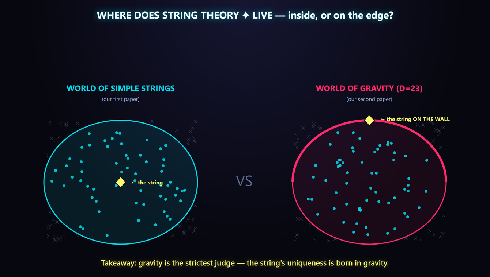
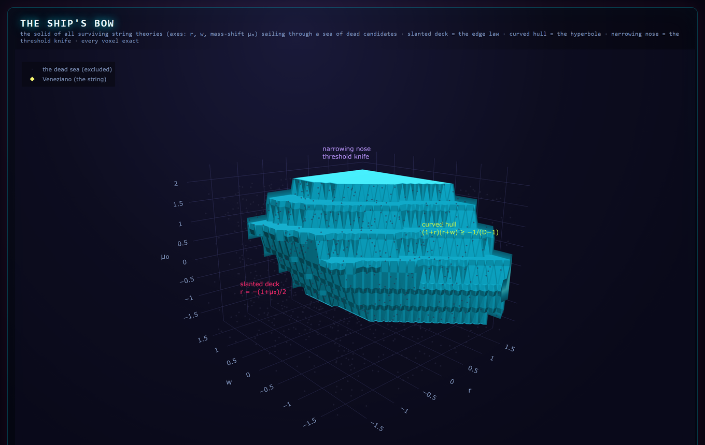
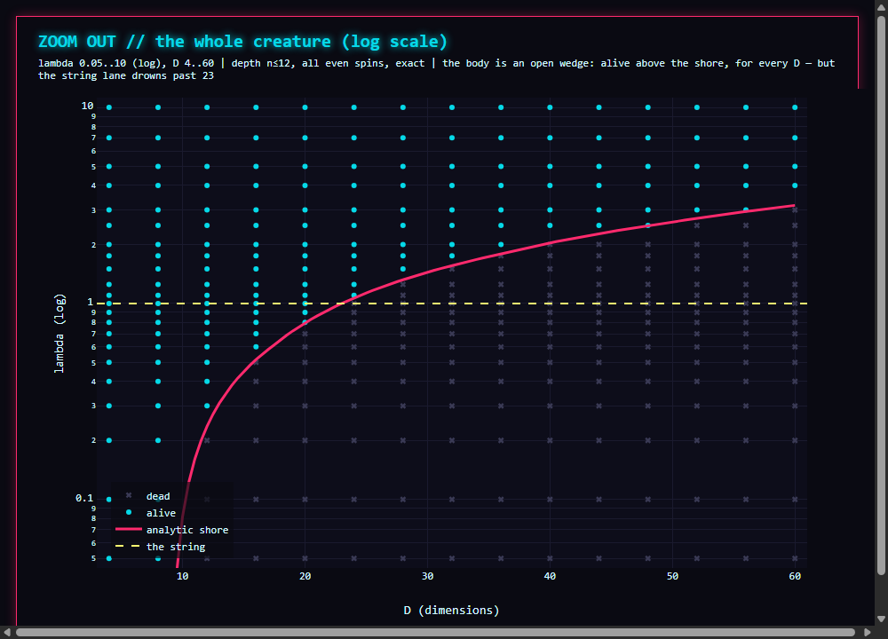

The shore of closed-string gravity — and the string standing exactly on it
A one-parameter family of graviton scattering amplitudes contains textbook string theory (the Virasoro–Shapiro amplitude) at λ=1. One quantum rule — probabilities can never be negative — kills part of the family as spacetime dimensions grow. This work derives the killing boundary as a formula. It switches on at 9 dimensions, passes exactly through the string at 23 dimensions, and straightens onto the exact asymptote D = (12+4√3) λ. In our own four dimensions nothing in the family dies at all.
What was done
The Cheung–Hillman–Remmen graviton bootstrap (PRD 111, 086034) produces a family of amplitudes whose residues are perfect squares; positivity of partial waves was known to bound the family numerically for D ≥ 9. Tracking the top coefficients of the residue polynomial through the partial-wave projection turns that numerics into a theorem:
an,2n−4 ≥ 0 ⇔ D ≤ Tn(λ) = 3(2n−3)/(n(n−2)) · (λ²+(2n−2)λ+1) + 2n
Consequences: the shore is born at (D,λ)=(9,0) — explaining, as a formula, the onset CHR saw numerically; the minimum of Tn(1) over levels is exactly 23, attained at n=4, so the shore passes exactly through the string, and pure Virasoro–Shapiro first loses positivity at D=24 through its level-4 spin-4 wave; at large λ the shore straightens onto D = (12+4√3) λ. The claim that this envelope is the complete boundary is a conjecture, labeled as such, with a published falsification battery: 494/494 exact-scan agreements and three knife-hunts along the boundary with zero alarms.

The cliff of survival. Height = how deep a candidate survives exact positivity testing; the yellow lane is the string; the white diamond is D=23, where it reaches the very edge. Every point is an exact rational verdict.
How it was checked
Every claim-bearing computation uses exact rational arithmetic — floating-point error cannot exist. The theorem was re-derived from scratch by an independent adversarial review; a seven-battery falsification suite ships with the code and exits clean; the formula's razor predictions at never-scanned dimensions (D*=271/4 and D*=57) were confirmed by direct evaluation, as were two doomed-cell executions at the predicted kill level. During the work an implementation bug was found via an external anchor, disclosed in the public log, and fixed; all affected results were voided and recomputed.
Explain it to anyone
A house rule of this lab: every paper ships with a way to explain it to your family. Here is this one. Every candidate theory of gravity in this family is a hiker on a high plateau. Adding dimensions of space means walking toward the edge. Below nine dimensions there is no edge at all — everyone is safe, including our own world. From nine dimensions on, a cliff appears, and we found the exact formula for where it runs. String theory walks the plateau and reaches the very edge at exactly 23 dimensions — one more step and it falls. The boundary of consistency passes exactly through the string — but only in high dimensions.
{kind=link}

{kind=link}

{kind=link}

Honest status: the trajectory law Tn is a theorem (independently re-derived, general n); completeness of the boundary is a conjecture, verified on 494 exact points with three clean knife-hunts and labeled as such in the paper. DOI: to be minted with the archived release.